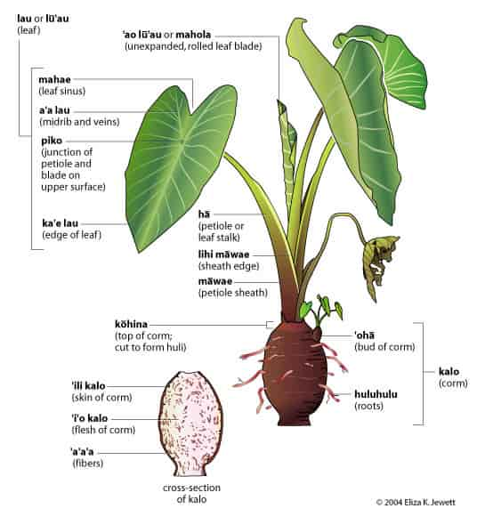
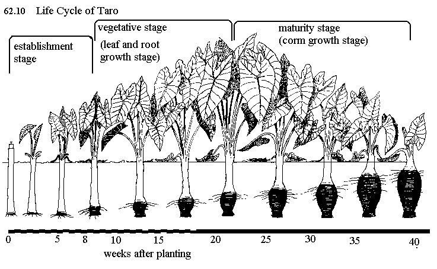
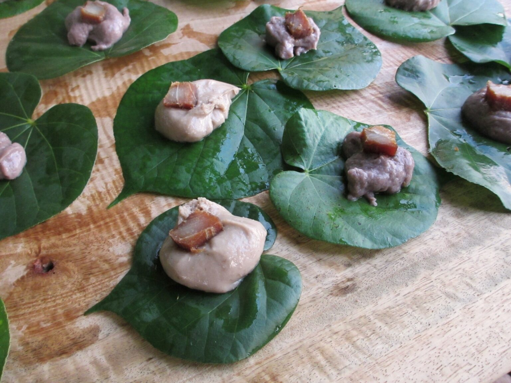

Anatomy of Kalo
Understanding the parts of a kalo plant helps you know what you're looking at when you're in the loʻi. You'll notice that even the names on this plant are reflective of the Native Hawaiian's family connection to Hāloa, like how the junction center of the kalo leaf is referred to as the piko, also known to Hawaiians as the navel or umbilical cord. Here's a quick diagram that breaks down this sacred plant from leaves to roots.
Common Kalo Varieties
Different kalo varieties are suited for different growing conditions and tastebuds. Here are three you're likely to see:
- Lehua Māoli – One of the most common varieties used for making poi (steamed and pounded kalo). It has a purple hue and produces smooth, high-quality poi. This variety grows best in wetland fields with consistent water flow and is known for being reliable and resistant to diseases.
- Moi – An excellent choice for chewy, table poi. The flesh is white with a pale pink tinge similar to the moi fish. Moi can be grown in both wetland and dryland, making it an excellent choice for home gardeners.
- Bun Long – A beginner-friendly variety originating from China that's popular for its versatility. Its leaves are the best choice for laulau (steamed leaves with meat) and the root is the best choice for making taro chips. It can grow in wet or dry conditions but prefers dryland, producing consistent harvests.
How To Grow Kalo
Growing kalo is simpler than you might think. This guide will go over the basics from preparing the fields to harvesting your first kalo. Whether you're volunteering at a loʻi or planting at home, these steps will help you get started. The easiest way to obtain huli (kalo cuttings) is to volunteer at your local community loʻi or a plant nursery.
- Prepare your field. Weed regularly and make sure water flows 2-4 inches deep. The water should be moving to bring nutrients and help prevent rot. For māla kalo (dryland planting), choose a spot with well-draining soil, regular sunlight, and consistent watering.
- Plant the huli. Push the huli into the mud at a slight angle. The few inches of kalo root should be completely covered in mud, keeping the green stem and leaves above the surface. Space plants about one foot apart in all directions. Dryland kalo varieties will need to be watered after planting.
- Care for your growing kalo plant. The most important job in the first few months is weeding to ensure the young kalo plants can thrive. Check water flow daily and clear anything blocking the waterways. Keep an eye out for yellow leaves or signs of pests. Dryland kalo needs to be watered when the soil starts to feel dry.
- Know when to harvest. After 8-12 months, your kalo will let you know when it's ready. Check for: lower leaves turning yellow, the whole plant leaning slightly, or the kalo corm feeling firm. If you're not sure, pull one out to check. It's better to harvest early than to let them go too long. Removing kalo can be done with your hands or with tools like an ‘ō‘ō (digging stick) or shovel. Dryland kalo is harvested the same way but may require more effort to dig out due to soil compaction. Wash the plant off after harvesting.
- Replant! Cut the kalo root separate from the leaves and stem. Save the top portion with 2-3 inches of root still attached. Replant that part and the cycle continues. If you want to create new kalo plants, take the ‘ohā (offshoots on the kalo plant) and plant them separately in the ground. Each harvest can produce 4-8 ‘ohā.

Traditional Foods

Once you've harvested your kalo, there are plenty of different ways to prepare it. Here are a few below:
- Poi – Created by baking or steaming the kalo root and then pounding it with water until it reaches a smooth consistency similar to thick pudding. Traditionally treated as a starch and eaten with fish or pork.
- Laulau – The kalo leaves are used to wrap around pork or fish and steamed together. The leaves add a spinach-like flavor and texture. Usually eaten with a side of poi.
- Kūlolo – Made from shredded kalo mixed with coconut milk and brown sugar. It's baked until caramelized and firm, resulting in a gummy texture similar to mochi. Best eaten after finishing the laulau and poi!